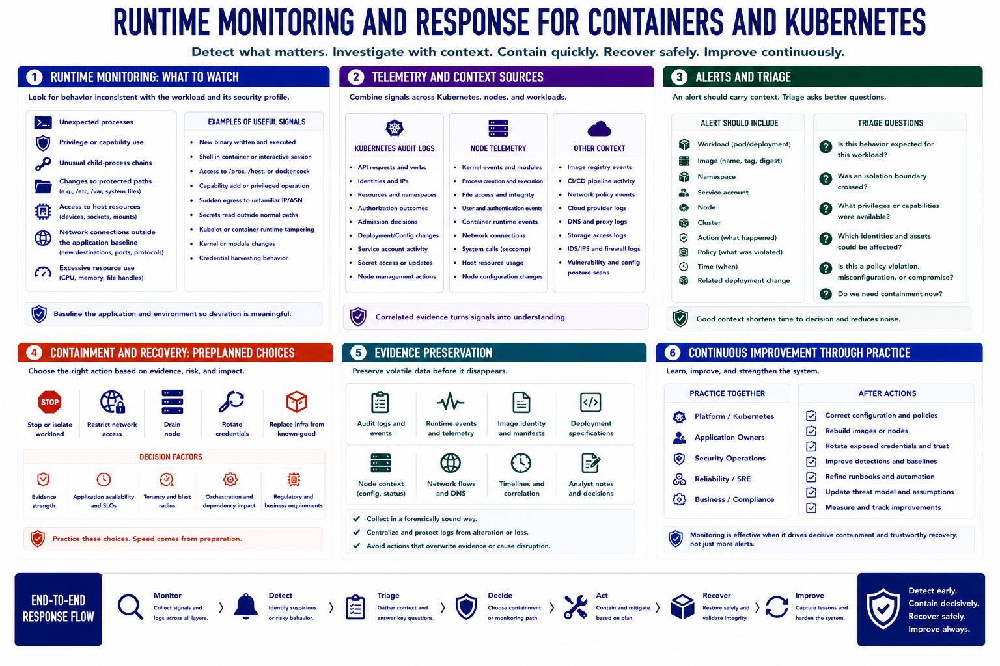

Detection, Monitoring, and Response
Connecting to LMS... Progress: in progress

Narration
Runtime monitoring looks for behavior inconsistent with the workload and its security profile. Useful signals include unexpected processes, privilege or capability use, unusual child-process chains, changes to protected paths, access to host resources, or network connections outside the application baseline.
Kubernetes audit logs show API requests, identities, resources, and authorization outcomes. Admission decisions, deployment changes, service-account activity, secret access, and node-management operations add orchestration context. Node telemetry contributes kernel, process, filesystem, authentication, runtime, and integrity evidence.
Alerts should include workload, image, namespace, service account, node, cluster, action, policy, time, and related deployment change. Triage asks whether the behavior is expected, whether the isolation boundary was crossed, what privileges were available, and which assets may be affected.
Containment and recovery need preplanned choices. Teams may stop or isolate a workload, restrict network access, drain a node, rotate credentials, or replace infrastructure from known-good definitions. The correct action depends on evidence, application availability, tenancy, and orchestration impact.
Preserve evidence before volatile data disappears. Retain relevant audit and runtime events, image identity, deployment specifications, node context, timelines, and analyst decisions. Coordinate collection so it does not overwrite evidence or cause unnecessary production disruption.
Practice response with platform, application, security, and reliability teams. Afterward, correct configuration, rebuild images or nodes, rotate exposed trust, improve detections, and update the threat model. Monitoring is effective when it supports decisive containment and trustworthy recovery, not simply more alerts.